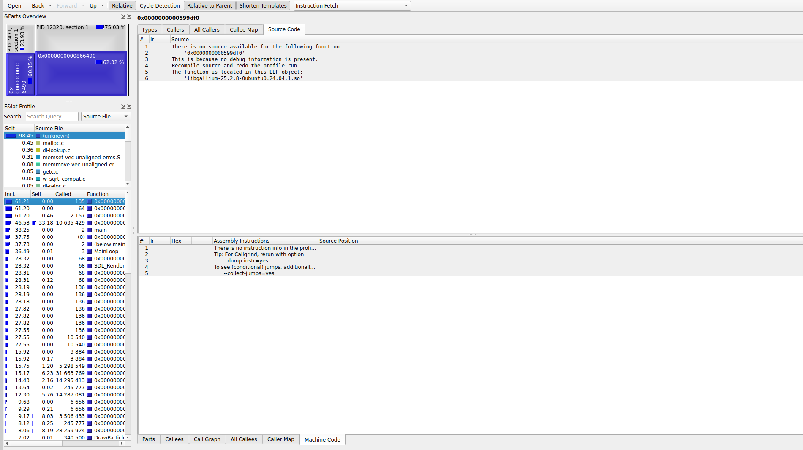
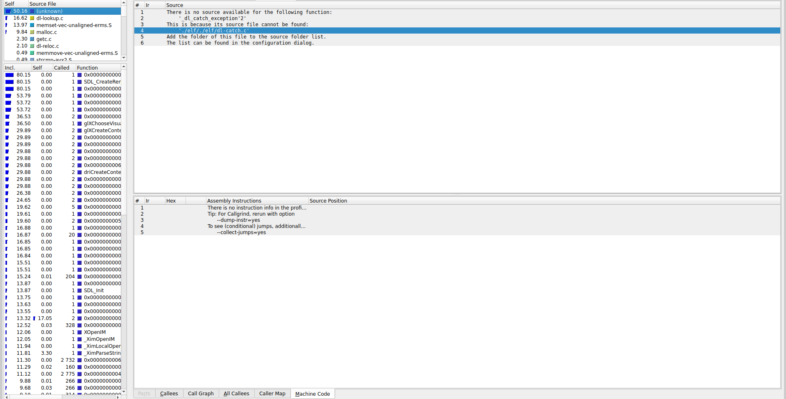

Particle Simulator
CPU rendering of particles using SDL2
Overview
A real-time particle simulation rendered entirely on the CPU using SDL2. The system handles thousands of particles with basic physics interactions including gravity, and collision detection.
Technologies
- C++
- SDL2
- Valgrind / KCachegrind (profiling)
Architecture
The simulator uses a simple entity-based design where each particle stores position, velocity, and lifetime. The main loop handles physics updates and rendering in separate passes to maintain consistent frame timing.
Technical Challenges
- Optimizing particle updates for CPU cache efficiency
- Balancing visual fidelity with frame rate at high particle counts
- Implementing efficient collision detection without spatial partitioning
Visuals
Profiling before optimization:

Profiling after optimization:

Lessons Learned
- Profiling with Valgrind/KCachegrind is useful for finding bottlenecks
Links
GitHub ·